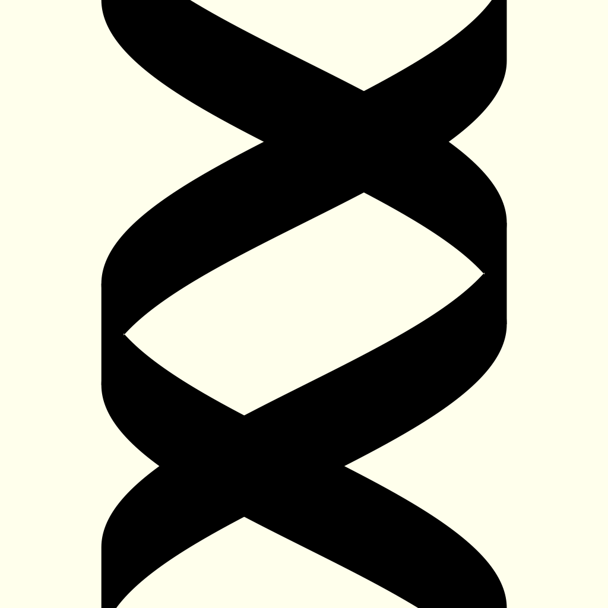

App Store で公開している iPhone/iPad/iPod touch 用アプリです。
Apps for iPhone/iPad/iPod touch on the App Store.
|
成長曲線2016 
|
体重と身長を記録し、成長曲線（日本人用・新 SD 曲線）、BMI、肥満度をグラフに表示できます。 |
|
 MultiCodons |
コドンや対応するアミノ酸を表示します。
標準以外の遺伝暗号を選択することもできます。 |